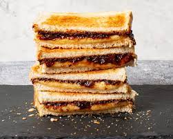

Cheese and Pickle Sandwich Recipe

Description
Grab yourself a cheese and pickle sandwich, one of Britain's favourite sandwiches!
Made of your favourite hard cheese, Branston's pickle, and nothing else. Today we'll use
mature cheddar.
Ingredients
- White bread
- Mature cheddar cheese
- Butter
- Branstons pickle
Steps
- Toast two bits of white bread.
- Put butter on the two bits of bread.
- Put some cheese between them.
- Put some Branston's pickle between them. Don't be shy, slather it on!
- Enjoy